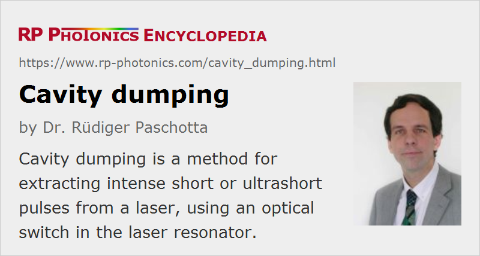

Cavity Dumping
Definition: a method for extracting intense short or ultrashort pulses from a laser, using an optical switch in the laser resonator
Categories: lasers, light pulses
How to cite the article; suggest additional literature
Author: Dr. Rüdiger Paschotta
Cavity dumping is a technique for pulse generation which can be combined either with Q switching or with mode locking, or sometimes even with both techniques at the same time. In any case, the basic idea is to keep the optical losses of the laser resonator as low as possible for some time, so that an intense pulse builds up in the resonator, and then to extract this pulse within about one cavity round-trip time using a kind of optical switch (“cavity dumper”), such as an acousto-optic modulator or a Pockels cell.
Cavity Dumping for Nanosecond Pulses
Originally, cavity dumping was invented in the context of Q-switched lasers. The purpose is to eliminate some basic limitations of Q switching. In particular, it can be disturbing that the pulse duration achievable with a Q-switched laser increases when the pulse repetition rate is increased; this is a consequence of the lower laser gain for a lower stored energy in the gain medium. Also, Q switching with high repetition rates may lead to pulse dropout.
The modification for cavity dumping is essentially that the resonator contains only highly reflecting mirrors (i.e., no partially transmissive output coupler mirror), and output coupling is controlled with the optical modulator in the resonator. Typically, this is an acousto-optic modulator, which is turned on briefly for pulse extraction and then diffracts the intracavity beam into the output (see Figure 1).
The pulse formation then works as follows:
- First, the modulator is kept in a state where most of the light in the resonator is coupled out, so that lasing cannot occur because the device is below the laser threshold. The energy provided by the pump source is then largely stored in the gain medium, as in a Q-switched laser.
- The modulator is then switched to a state where light circulating in the laser resonator experiences only the small parasitic losses. As a result, the intracavity power builds up quickly – typically, within a few hundred resonator round-trip times. No light is coupled out during that period.
- Then, the modulator is again quickly switched into the state where most of the light is coupled out. The light in the resonator is thus extracted within about one round-trip time. After that, a new cycle can begin.
A notable difference from Q switching is that before generation of the output pulse the energy is stored in the intracavity light field, rather than in the gain medium. The perhaps most important advantage is that this energy can be extracted within just one round-trip time, independent of the time required for building up the intracavity power. Therefore, the pulse duration achievable is more or less determined by the resonator length (provided that the switching time of the modulator is not longer than the resonator round-trip time), and is decoupled from the laser gain. This means that even for very high pulse repetition rates of e.g. several megahertz, pulse durations of a few nanoseconds are still achievable. In this regime, a Q-switched laser would generate much longer pulses, or would even not be able to generate one pulse for each intended time slot. (Pulse dropouts can occur when the Q switch is operated at too high frequencies.) Similarly, the method can be used for lasers with low-gain materials, where short pulses would be difficult to achieve with Q switching.
For high pulse repetition rates (well above the inverse upper-state lifetime), a cavity-dumped laser operates particularly stably, since some light always remains in the laser resonator after pulse extraction, and this light can act as a seed for the next pulse. This is the preferred operation regime.
Although the laser setup for cavity dumping is in principle similar to that for Q switching, the requirements particularly concerning the Q switch are different:
- The switching time should not be longer than the resonator round-trip time, i.e., it should usually not exceed a few nanoseconds (while Q switching works well with much lower switching speeds). For acousto-optic modulators, this requires not only that the RF source can be quickly switched, but also that the beam radius in the modulator is fairly small, since the switching time is limited by the transit time of the acoustic wave through the laser beam. Unfortunately, a small mode area increases the optical intensities in the modulator and may require additional intracavity optics.
- The diffraction efficiency should be high, ideally well above 50%, so that most of the light can be extracted within one resonator round-trip. For that reason, acousto-optic cavity dumpers are often operated with higher RF frequencies of several hundred megahertz, as compared with tens of megahertz for Q switches, and use relatively high RF powers.
Since the energy is stored in the light field rather than in the gain medium, cavity dumping can even be applied to some semiconductor lasers, in particular to vertical external-cavity surface-emitting lasers (VECSELs).
From these considerations it follows that cavity dumping is superior to Q switching mainly for high pulse repetition rates, particularly if short pulse durations are required at the same time. On the other hand, this technique introduces additional constraints e.g. on mode areas and switching speeds.
Cavity Dumping of Ultrashort Pulses
Cavity dumping can also be used in mode-locked lasers for generating ultrashort pulses with higher pulse energies. As for nanosecond devices, the resonator losses are kept small for most of the time, so that the circulating pulse can become intense. When it has reached the maximum intensity (and stable pulse parameters), this intracavity pulse can be coupled out with an optical switch. The switching speed required is then even higher than for nanosecond devices. Therefore, an electro-optic modulator in combination with a polarizer is usually required. In addition, the switching must be synchronized with the circulating pulse: a fast photodiode monitors the weak pulses leaking e.g. through a highly reflecting cavity mirror, and the driver electronics use this signal to fire the optical switch at the right time, so that the switching occurs while the pulse is at the other end of the resonator. The pulse duration achievable is in that case, of course, not limited by the round-trip time; a long round-trip time can even be beneficial because it reduces the requirements concerning the switching time.
Cavity dumping for ultrashort pulses is mostly used with mode-locked solid-state bulk lasers, such as titanium–sapphire lasers or diode-pumped neodymium-doped or ytterbium-doped lasers. The achieved pulse energy is typically about an order of magnitude higher than with an ordinary mode-locked laser (i.e., typically of the order of 1 μJ), and the pulse repetition rate can be hundreds of kilohertz or several megahertz. The average output power of cavity-dumped lasers is usually significantly smaller than for a mode-locked laser without cavity dumper; this is due to the effect of parasitic resonator losses.
The design of a cavity-dumped laser, particularly for ultrashort pulse generation, is not a trivial issue. Apart from the aspect of fast and well synchronized switching, problems can arise e.g. from ringing of the Pockels cell or from the optical nonlinearity and chromatic dispersion introduced by the cavity dumper. The greatly varying intracavity pulse energy is also not compatible with soliton mode locking. Therefore, it is usually not advisable to consider a cavity dumper as a simple add-on to an independently designed mode-locked laser. Instead, the system as whole should be properly designed, taking into account e.g. the effect of the nonlinearity of the cavity dumper on the pulse formation from the very beginning.
For higher pulse energies, lower pulse repetition rates may be considered. However, cavity dumping then no longer works very well: when the intracavity power really vanishes between two extracted pulses, the stability of the process is degraded. For similar reasons, it is also not easy to combine cavity dumping with mode locking and simultaneous Q switching: whereas Q switching can quickly build up a high power in the resonator, the mode-locking process requires much more time to form stable pulses. For low repetition rates (e.g. for 10 kHz or lower) with correspondingly higher pulse energies, regenerative amplifiers are preferable, where the pulse formation and the amplification process are decoupled.
Nonlinear Cavity Dumping
Whereas all previously discussed techniques for cavity dumping are based on some electrically controlled optical switch, it is also possible to do cavity dumping with a nonlinear interaction [8, 11]. Here, the cavity-dumped laser contains a nonlinear crystal, which is phase-matched e.g. for sum frequency generation, and cavity dumping is realized by sending pulses from another laser, which is Q-switched, into that crystal. The energy is then extracted in the form of a short pulse at the sum frequency. The pulse duration is essentially determined by the duration of the Q-switched input pulse. Between the pulses, the nonlinear crystal causes only low parasitic losses in the laser resonator, and thus allows the build-up of a high intracavity circulating power. Note that the circulating intracavity power limits the peak power of the generated pulse, since each output photon requires one photon from each laser to be converted.
If the pulses could be properly synchronized with the relaxation oscillations of the continuously pumped cavity-dumped laser (via a suitable choice of repetition rate), the power efficiency could be enhanced further. Of course, the principle of nonlinear cavity dumping can also be realized with pulsed pumping or Q switching [11].
Questions and Comments from Users
Here you can submit questions and comments. As far as they get accepted by the author, they will appear above this paragraph together with the author’s answer. The author will decide on acceptance based on certain criteria. Essentially, the issue must be of sufficiently broad interest.
Please do not enter personal data here; we would otherwise delete it soon. (See also our privacy declaration.) If you wish to receive personal feedback or consultancy from the author, please contact him e.g. via e-mail.
By submitting the information, you give your consent to the potential publication of your inputs on our website according to our rules. (If you later retract your consent, we will delete those inputs.) As your inputs are first reviewed by the author, they may be published with some delay.
Bibliography
| [1] | A. A. Vuylsteke et al., “Theory of laser regeneration switching”, J. Appl. Phys. 34 (6), 1615 (1963), doi:10.1063/1.1702644 |
| [2] | G. N. Gibson et al., “Electro-optically cavity-dumped ultrashort-pulse Ti:sapphire oscillator”, Opt. Lett. 21 (14), 1055 (1996), doi:10.1364/OL.21.001055 |
| [3] | A. Baltuška et al., “All solid-state cavity dumped sub-5-fs laser”, Appl. Phys. B 65, 175 (1997), doi:10.1007/s003400050262 |
| [4] | A. Killi et al., “Diode-pumped femtosecond laser oscillator with cavity dumping”, Opt. Lett. 29 (11), 1288 (2004), doi:10.1364/OL.29.001288 |
| [5] | A. Killi et al., “High speed electro-optical cavity dumping of mode-locked laser oscillators”, Opt. Express 13 (6), 1916 (2005), doi:10.1364/OPEX.13.001916 |
| [6] | L. McDonagh et al., “47 W, 6 ns constant pulse duration, high-repetition-rate cavity-dumped Q-switched TEM00 Nd:YVO4 oscillator”, Opt. Lett. 31 (22), 3303 (2006), doi:10.1364/OL.31.003303 |
| [7] | C. Stolzenburg et al., “Cavity-dumped intracavity-frequency-doubled Yb:YAG thin-disk laser with 100 W average power”, Opt. Lett. 32 (9), 1123 (2007), doi:10.1364/OL.32.001123 |
| [8] | P. Tidemand-Lichtenberg et al., “Nonlinear cavity dumping of a high finesse frequency mixing module”, Opt. Express 15 (15), 9799 (2007), doi:10.1364/OE.15.009799 |
| [9] | G. Palmer et al., “Microjoule pulses from a passively mode-locked Yb:KY(WO4)2 thin-disk oscillator with cavity dumping”, Opt. Lett. 32 (11), 1593 (2007), doi:10.1364/OL.32.001593 |
| [10] | G. Palmer et al., “Passively mode-locked and cavity-dumped Yb:KY(WO4)2 oscillator with positive dispersion”, Opt. Express 15 (24), 16017 (2007), doi:10.1364/OE.15.016017 |
| [11] | E. Herault et al., “Pulsed blue laser at 491nm by nonlinear cavity dumping”, Opt. Express 16 (24), 19419 (2008), doi:10.1364/OE.16.019419 |
| [12] | M. Grishin, “Cavity dumping versus stationary output coupling in repetitively Q-switched solid-state lasers”, J. Opt. Soc. Am. B 28 (3), 433 (2011), doi:10.1364/JOSAB.28.000433 |
| [13] | X. Yu et al., “Performance improvement of high repetition rate electro-optical cavity-dumped Nd:GdVO4 laser”, Appl. Phys. B 106 (2), 309 (2012), doi:10.1007/s00340-011-4786-7 |
| [14] | J. Myers et al., “High peak power cavity dumping semiconductor lasers”, Opt. Lett. 42 (1), 113 (2017), doi:10.1364/OL.42.000113 |
See also: pulse generation, pulses, ultrashort pulses, Q switching, mode locking, regenerative amplifiers
and other articles in the categories lasers, light pulses
|  |
If you like this page, please share the link with your friends and colleagues, e.g. via social media:
These sharing buttons are implemented in a privacy-friendly way!